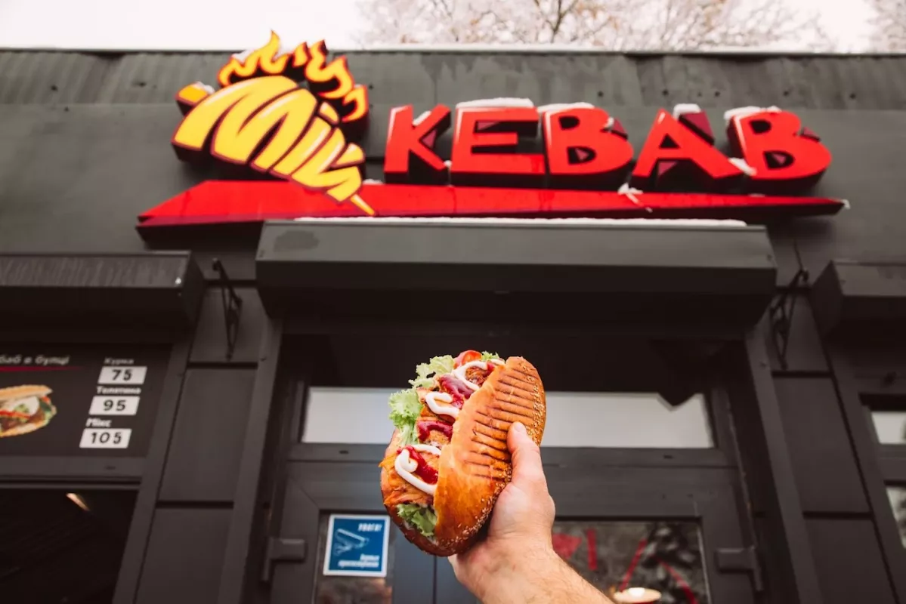
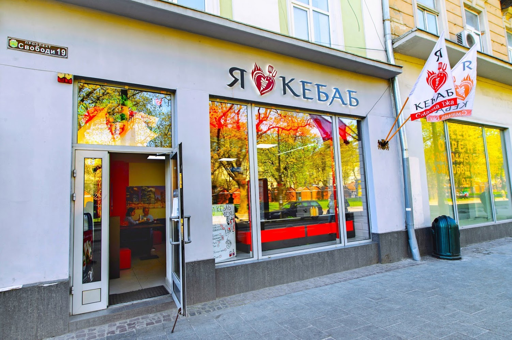

Найвідоміші заклади
у
Львові
☛
Вогень Кебаб
.jpg)
Це смачний та поживний перекус, хоча в нашому випадку голодними Ви точно не залишитесь. Це своєрідне здорове поєднання: - власноруч спеченого за старими переписами лаваша; - м'яса, яке ми маринуємо в прянощах більше доби і не питайте чому, наш Chef нікому не розповідає;
Перейти на сайтМій Кебаб
У "Мій Kebab" ми пропонуємо своїм гостям широкий асортимент кебабів, які ви можете замовити на вибір з різними добавками та соусами. Також у нашому меню ви знайдете безліч інших варіантів страв, які не залишать вас байдужими. Наші кухарі мають багаторічний досвід та знають, як приготувати їжу справжньої якості. "Мій Kebab" - це не просто ще один заклад швидкого харчування, це місце, де ви можете смакувати велику кількість смачних та корисних страв, відпочивати в затишній атмосфері та насолоджуватися приємними емоціями. Ми завжди готові прийняти наших гостей та зробити все можливе, щоб вони відчули себе комфортно та з задоволенням провели час.
Перейти на сайтЯ ❤ Кебаб
Вже десятки закладів по всій країни частують усіх найдосконалішими комбо-меню та крутими кебабами. Та для нас – це лише початок, ми вміємо ставити цілі та максимально швидко їх досягати. Наша ціль – 100 закладів «I LOVE КЕВАВ» в Україні! Та ми впевнені що цього року втілимо її у життя.
Перейти на сайт